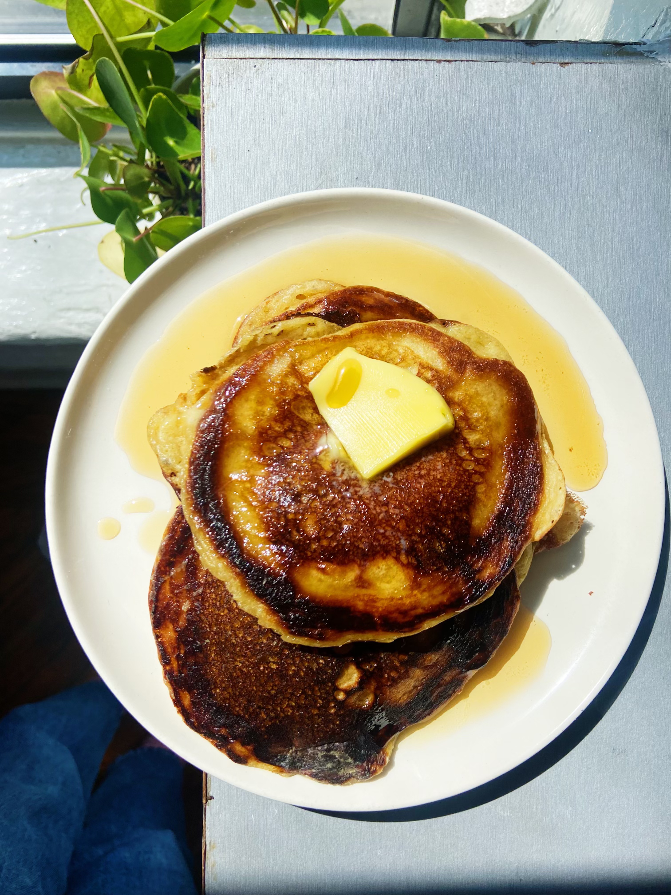

Perfect Pancakes

Description
These pancakes are incredible.
Ingredients
- 2 cups all-purpose flour
- 3 tablespoons sugar
- 1 ½ teaspoons baking powder
- 1 ½ teaspoons baking soda
- 1 ¼ teaspoons kosher salt
- 2 ½ cups buttermilk
- 2 large eggs
- 3 tablespoons unsalted butter, melted
-
Coconut oil for the pan (vegetable or canola oil can be used as well)
Steps
-
Whisk flour, sugar, baking powder, baking soda, and kosher salt together
in a bowl.
-
In a medium bowl (or the measuring cup you measured your buttermilk in),
whisk the eggs into buttermilk. Gently whisk this mixture into your dry
ingredients— it’s okay if more than a few lumps remain. Add the melted
butter and (still) gently, whisk everything together, moving towards the
outside of the bowl, until all ingredients are incorporated. Do not
overbeat (a few lumps are fine, trust!). If you like, the batter at this
stage can be refrigerated for an hour or two.
-
Heat a large nonstick griddle or skillet, preferably cast-iron, over
medium heat for a few minutes, until the skillet is visibly hot. Add 1-2
tablespoons oil to the skillet and turn heat down to medium-low. Using a
measuring cup, ladle 1/4-1/3 cup batter into the skillet (depending on
how large you like your pancakes). If you’re using a large skillet (or a
griddle), feel free to make one-two more, just making sure they aren’t
spreading to make one giant pancake.
-
Once you notice a few bubbles begin rising on the surface and the
bottoms are nicely browned (this will take about 2 to 4 minutes), flip
them. Cook until the other sides are lightly browned, another 2 minutes
or so. If you’re making a bunch at a time, you can move pancakes as
they’re ready to a wire rack set inside a rimmed baking sheet, and keep
in a 325° oven until all the batter is cooked and you’re ready to serve.